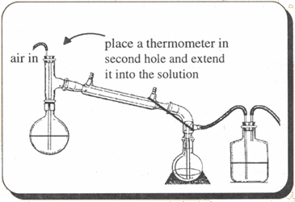

|
Some simple aliphatic amines are employed in the final synthesis steps of some of the syntheses covered in this book. Amines can be considered derivatives of ammonia (NH3) with one or more of the hydrogens replaced by an alkyl group (carbon chain). Aliphatic means that no aromatic stuctures are present such as a benzene ring and by simple is meant that the alkyl groups are relatively small. Here we will be concerned with primary amines (only one hydrogen replaced) and alkyl groups no longer than two carbons. In short, ethylamine and methylamine. Ethylamine and methylamine are listed compounds so they are illegal to possess. They are very closely watched, particularly methylamine due to its notorious use in methamphetamine manufacture (X too). Since I know of no common means of obtaining these chemicals only synthetic routes will be discussed. Hexamethylenetetramine MethodHexamethylenetetramine, also known as urotropine, hexamine and methenamine, is used to form primary amines from alkyl halides in the Delepine reaction. Urotropine reacts at a much higher rate with alkyl iodides than with bromides or chlorides. In the reaction, a quaternary ammonium complex is formed first which is hydrolyzed under acidic conditions to the salt of the primary amine.Galat and Eliot, Journal of the American Chemical Society, vol 61, 3585 (1939), give a procedure where alkyl chlorides or bromides are converted to the iodide in the reaction mixture by sodium iodide and the complex hydrolyzed without isolating it first. By their procedure, 72% methylamine was obtained with a reaction time of one week, 82% ethylamine in 8 days, and 54% phenethylamine in three weeks. This is not bad considering the time spent is mainly just in waiting. Dissolve 140g (1 mole) of urotropine and 157.5 (1.05 moles) sodium iodide (or 174g/1.05moles potassium iodide) in 1.0 liters of hot 95% ethyl alcohol. 109 g of ethyl bromide is then added and the solution is allowed to stand until no more precipitation occurs (~8 days). A stream of HCl gas is then run into the mixture where the precipitate is hydrolyzed and dissolves, and ammonium chloride precipitates. The ammonium chloride is filtered off and the alcohol in the filtrate removed by distillation under reduced pressure. The authors purified the crude amine by distilling with excess sodium hydroxide (45g in ~135ml water). Use of an ice-salt bath or acetone-dry ice bath is necessary to condense the amines coming over (methylamine bp -6.3°C, ethylamine 16.6°C). The amines are then dissolved in ether (or toluene, methylene chloride etc) and reconverted to the HCl salts with a stream of HCl gas. Filter the crystals formed from the ether. For methyl iodide (142g) and ethyl iodide (156g) in place of ethyl bromide, omit the iodide salt above. When substituting ethyl chloride, use 65 g of ethyl chloride. Formaldehyde and Ammonium Chloride MethodThis is probably the best method next to buying methylamine to be had. The method is also covered in exceptional detail in Organic Syntheses Collective Vol. 1, p 347-350. This book can be found in university libraries everywhere, so I will only cover the method in general.37% technical formaldehyde and ammonium chloride are placed in a distillation apparatus and heated on a steam bath. The distillate that comes over is discarded. As the reaction mixture cools, crystals of crude methylamine hydrochloride are formed and filtered. The filtrate liquid is then heated to reduce the volume of liquid and then cooled again to crystallize out more crude methylamine hydrochloride. This process is continued. The successive crystallizations produce progressively less pure methylamine hydrochloride. Purification through recrystallization and washing is discussed. Hofmann Rearrangement[41] Amides react with chlorine and bromine under basic conditions to yield an amine of one less carbon. Reacting acetamide with calcium hypochlorite, the source of chlorine, and subsequently with sodium hydroxide we get methylamine. The methylamine formed is bubbled through HCl in the two receiving flasks and are there converted to methylamine hydrochloride. Refer to the miscellaneous chemicals chapter for the synthesis of acetamide. Propanamide would undergo a similar reaction to yield ethylamine.Set up the apparatus as shown and fill the two receiving flasks with 300ml muriatic acid each. A #4 rubber stopper will fit a 24/40 joint. Using a two-hole stopper, place a glass tube and a thermometer through the holes and into the solution. Greasing the glass with joint grease will help sliding them in. In an erlenmeyer flask, place 164 g of HTH swimming pool chlorine or other similar source of calcium hypochlorite. 500 ml of water are added and the flask stirred to dissolve as much as possible. The contents are then chilled in an ice bath. 100 g of crushed ice are then added. The reaction flask (2000ml) is disconnected from the apparatus and a chilled solution of 100g acetamide in 200 ml water is added. The flask is placed in an ice bath and 100g of ice is added followed by one third of the HTH solution. The flask is shaken and chilled. The remaining HTH solution is added in two portions each time followed by shaking and cooling. If the temperature rises above 10°C, start over. It is OK to add more ice if necessary (One could clamp a separatory funnel in place and let it drip feed the solution while the reaction flask remains immersed in the ice bath and is stirred with a magnetic stirrer). Once the addition is complete, the flask is allowed to sit in the ice bath for 10 more minutes. The flask is then placed back in the distillation apparatus and a solution of 24g sodium hydroxide in 40 ml water at room temperature is added through the top of the still head. The top is immediately restoppered and air passed into the solution through the glass tube by an aquarium air pump. The temperature is raised to 60°C and then more carefully up to 65°C where the heat is removed. Decomposition of the N-chloroacetamide takes place between 65°C and 75°C. This decomposition should be controlled in order to prevent the contents from boiling over into the receiver. If the temperature rises to 80°C, cool the flask with an ice bath. When heat is no longer spontaneously generated in 5-10 min, the contents are heated to a boil until 400-500ml of distillate are collected. The contents of the two receiving flasks are then combined and poured into an evaporating dish which is heated over a wire gauze until only about 150 ml remain. It is then heated over a water bath to dryness (or oven set on 200°F). The residue consists of methylamine hydrochloride along with ammonium chloride. Recrystallizing with absolute ethyl alcohol will remove most of the ammonium chloride. The authors also relate another purification method. AmmonolysisReacting ammonia with the corresponding alkyl halide would be an ideal way to produce methylamine and ethylamine if it wasn't for the significant amounts of di- and tri-amines being produced from overreacting. These impurities would be troublesome to remove completely due to their close solubilities and boiling points to the desired compounds. Purification of the hydrochloride salts with some of the procedures as in the above methylamine article could lead to reasonable enough purities. The remaining impurities would just produce the corresponding analogue in the final reaction for MDMA or MDEA. These analogues are inactive and would only dilute the final product.MethylamineThe higher the concentration of the products in this reaction the faster the rate. Alkyl iodides also react faster than alkyl bromides which react faster than alkyl chlorides.To 142 grams (1 mole) of methyl iodide add 5 moles (85g) of ammonia in methanol. The amount of solution this is depends on the concentration of your solution (see mischellaneous chapter for its preparation). To find this amount divide 85 by the concentration of your ammonia solution. For example if your solution is 20% then divide 85 by 0.20, which is 425 g of ammonia solution. Place this in a flask, stopper, and let sit for a week. If the solution is very discolored, add some sodium thiosulfate to clear it up. Acidify the solution with a stream of HCl gas (see misc chapter). Filter the crystals that form. This contains a lot of ammonium chloride formed from the excess ammonia in the solutuion. Purify further with methods in the above cited article. To replace methyl iodide use the following amounts of other alkyl halides: ethyl iodide (156g, 1 mole), ethyl bromide (109g, 1 mole), ethyl chloride (65g, 1 mole). When substituting slower reacting alkyl halides, the reaction times should be increased significantly (2-3 weeks). Industrial MethodsAs a side note for the curious, methylamine is produced industrially by reacting methanol directly with ammonia and a catalyst at elevated temperatures. This may not be very practical for any clandestine operation, but the following are articles describing the method:Davis and Elderfield, The Catalytic Preparation of Methylamine, Journal of the American Chemical Society, vol 50, p 1786-1789 (1928) Turner and Howard, Methylamines from Methanol and Ammonium Chloride, Journal of the American Chemical Society, vol 42, p 2663-2665 (1920) |